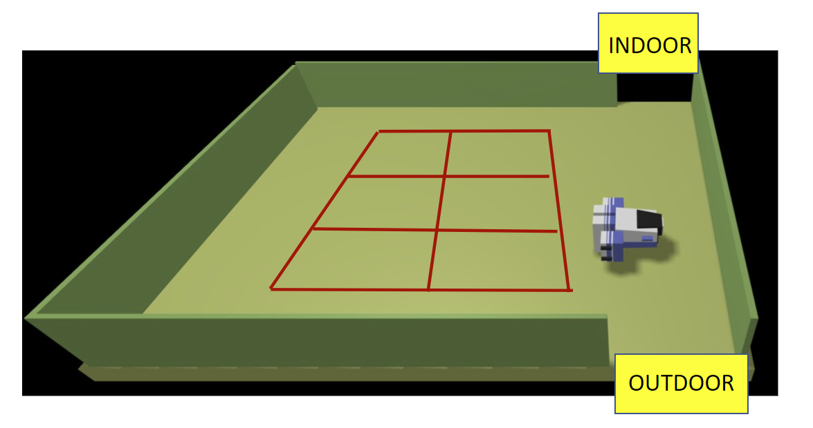

A parking-area is an empty room that includes;
- an INDOOR to enter the car in the area. Facing the INDOOR, there is
a INDOOR-area equipped with a weigthsensor that measures the weigth of the car;
- an OUTDOOR to exit from the parking-area. Just after the OUTDOOR, there is
OUTDOOR-area equipped with a outsonar, used to detect the presence of a car.
The OUTDOOR-area, once engaded by a car, should be freed within a prefixed interval of time DTFREE;
- a number N (N=6) of parking-slots;
- a thermometer that measures the temperature TA of the area;
- a fan that should be activated when TA > TMAX, where TMAX is a prefixed value (e.g. 35)
A map of the parking area, represented as a grid of squares of side length RD,
is available in the file parkingMap.txt:
|r, 0, 0, 0, 0, 0, 0, X,
|0, 0, X, X, 0, 0, 0, X,
|0, 0, X, X, 0, 0, 0, X,
|0, 0, X, X, 0, 0, 0, X,
|0, 0, 0, 0, 0, 0, 0, X,
|X, X, X, X, X, X, X, X,
The map includes the positions of the parking-slots (marked above with the symbol X)
and of the fixed obstacles in the area (the walls marked with the symbol X).
The area marked with X is a sort of 'equipped area' upon which the transport trolley cannot walk.
Thus, to get the car in the parking-slot (2,2), the transport trolley must
go in cell (1,2).
The proper scene for the WEnv is reported in: parkingAreaConfig.js
